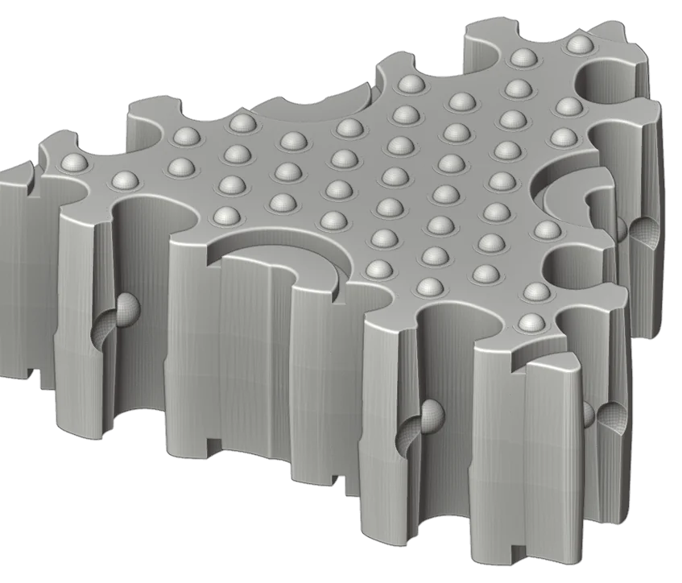
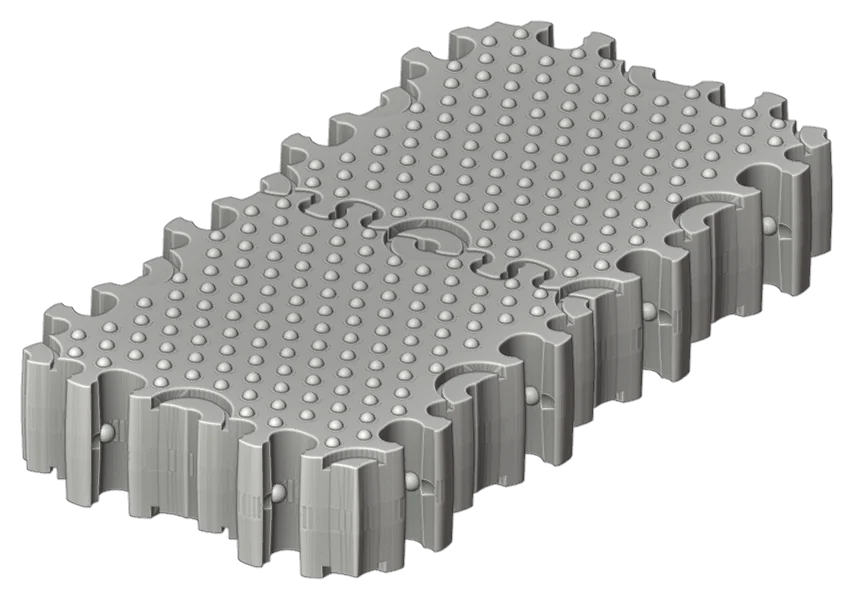
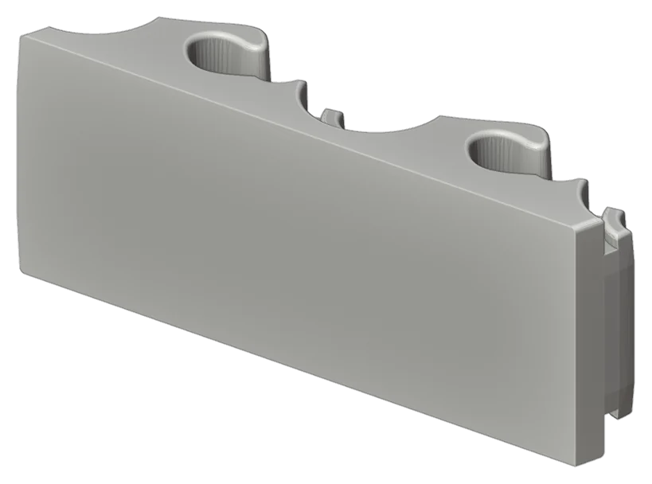

January to February 2022
A square brick, and a first print
Eight months of sketches became a 3D model in the last week of January 2022, drawn by industrial designer Rico Jay Beringuela: a square brick with locking features on its faces, and a triangular partner so that a mat could turn corners. Within days 3DSMITH in Vancouver had printed the first ten-centimetre test pieces. The printer asked for STEP rather than STL files because the early meshes were coarse, which set the pattern for every version that followed.
Design: Rico Jay Beringuela. Printing: 3DSMITH, Vancouver.



